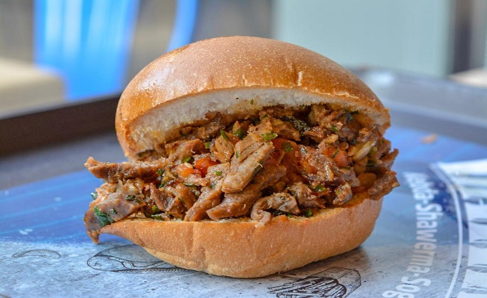

Shawerma

Description
Shawerma is considered an Egyptian delicacy. It is served in thousands every day.
It is a sanwitch and is usually eaten in the street.
shawerma can be served as chicken or beef.
Ingredients
- olive Oil
- Freshly squeezed lemon juice
- onion
- garlic cloves
- Chicken breast, thighs or beef
- spices such as salt, cumin powder, turmeric, sweet paprika, & black pepper
Steps
- Chicken or beef is marinated in the fresh lemon juice and the spices
- it is then grilled or broiled
- served in bread after that